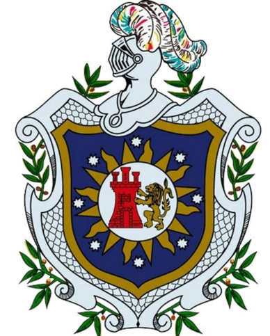

<mat-toolbar class="docs-nav-bar barrita row">
    <a class="col-1 docs-button mat-button elemento" onclick="this.blur()" mat-button (click)="drawer.toggle()"><i class="fa fa-bars"></i></a>
    <a class="col-1 docs-button mat-button elemento" routerLink="/" mat-button> UNAN-Le&oacute;n</a>
    <a class="col-1 docs-button mat-button elemento" routerLink="/" mat-button disabled>JKM</a>
    <div class="col-8"></div>
    <div class="col float-right">
        <button type="button" class="btn btn-primary" (click)="logout()" *ngIf="okay()">LogOut</button>
    </div>
</mat-toolbar>
<mat-drawer-container class="example-container contenidos">
    <mat-drawer #drawer class="example-sidenav" mode="over">
        <app-contenido (cerrar)="drawer.toggle()"></app-contenido>

    </mat-drawer>

    <mat-drawer-content>
        <div class="p-4">
            <router-outlet></router-outlet>
        </div>


    </mat-drawer-content>
</mat-drawer-container>